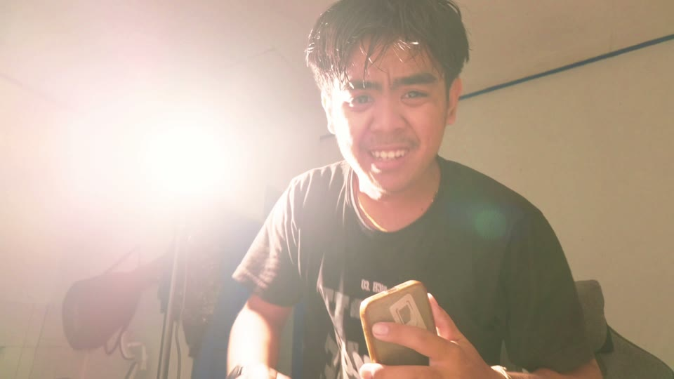
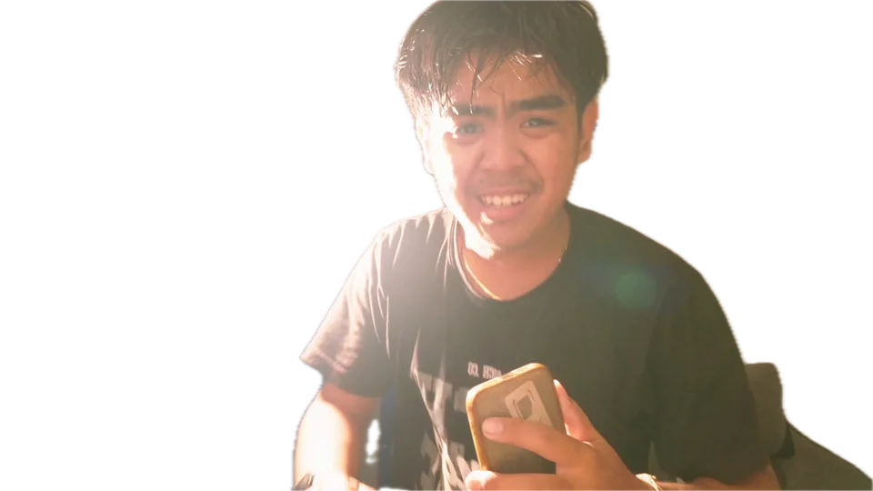
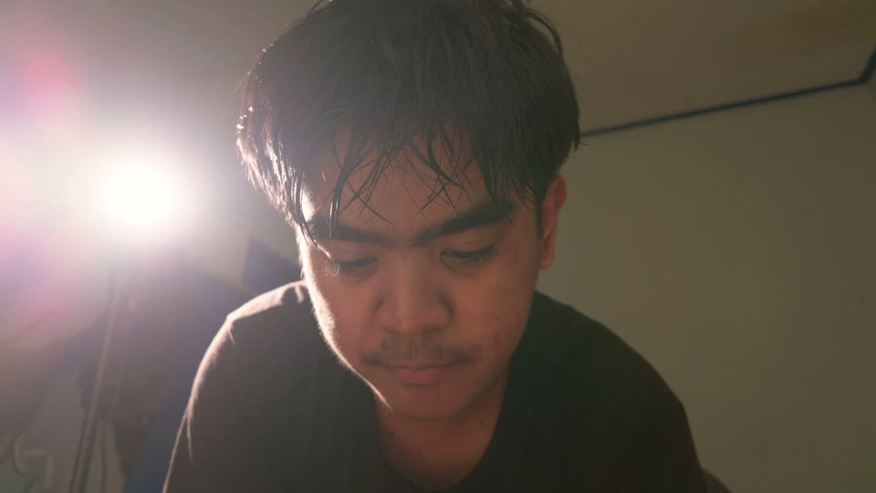

Bosku.

Tangkapan layar asliBubble chat Irfanpesan aslinya ke Claude
Tangkapan layar asliFinder: folder Jadisatuikon folder asli
Tangkapan layar asliFile TheGap-Jadisatu-v18.mp4ikon file asli

awal: gelapIni Irfan. Dia bosku.